붙어 있는 정수 범위를 하나의 비교로 합치기
특정 값 하나와 바로 뒤의 구간을 합쳐 같은 연속 범위로 표현한다.
llvm__1.pdf의 전체 내용입니다. 설명·코드·표·검증 기록을 생략하지 않고 옮겼습니다. 그림 안의 문자 인식 결과에는 기호 오류가 있을 수 있어 이미지도 함께 제공합니다.
이 문서의 목차
#152948 이슈 분석 / https://github.com/llvm/llvm-project/issues/152948 / 이슈 해석
#152948 이슈 분석
https://github.com/llvm/llvm-project/issues/152948
이슈 해석
Missed fold: x == c || (c + 1 <= x && x <= c2) => (c <= x
&& x <= c2) #152948C example
#include <stdint.h>using u32 = uint32_t;auto inline in_range(auto x, auto lo, auto hi) -> bool {
return lo <= x && x <= hi;
}-> 보조함수로 값 x가 lo 이상이고 hi 이하인지 검사한다.
extern "C" { // 0x7f = 127, 0x80 = 128, 0x9f = 159
auto src(u32 c) -> bool { return (c == 0x7f) || in_range(c,
0x80, 0x9f); }
// src -> c == 127 || (128 <= c && c <= 159);auto tgt(u32 c) -> bool { return in_range(c, 0x7f, 0x9f); }
// tgt -> 127 <= c && c <= 159;
}// => 따라서 src / tgt 둘다 참을 반환하는 값(127~159)은 완전히 같다.
assembly
src: ; 보통함수의 첫번째 정수 인수가 w0에 들어옴 -> w0 = c
mov w8, #128
; 레지스터 w8에 128을 넣는다.#152948 이슈 분석 1
페이지 배치·기호·도식 확인하기

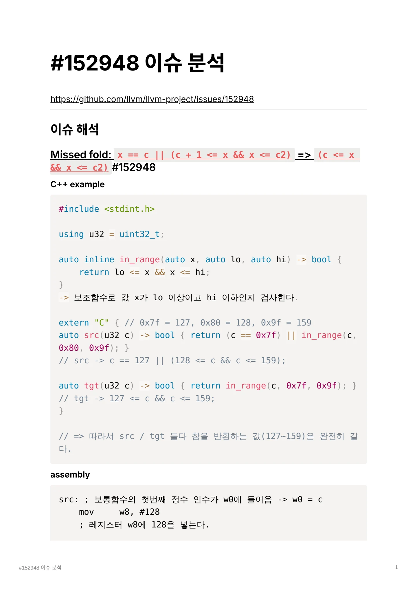
cmp w0, #127 / ; w0와 127을 비교 즉, c == 127 / and w9, w0, #0xffffffe0
cmp w0, #127
; w0와 127을 비교 즉, c == 127
and w9, w0, #0xffffffe0
; c의 하위 5비트를 모두 0으로 만든다. => 따라서 c를 32배의 단위로 내림한거처럼 동작.
; 결과가 128인지 확인하면 c가 128부터 159 사이인지 알 수 있음.
ccmp w9, w8, #4, ne
; 앞의 c==127 비교가 거짓이면 w9 == 128인지 추가로비교함. ; 이미 참이면 전체 or는 참이므로 범위 검사할 이유가 없 기 때문.
cset w0, eq
; 최종 결과가 같으면 w0에 1, 아니면 0
rettgt:
sub w8, w0, #127
; 입력값에서 127을 뺌 -> 127~159를 0~32로 바꿈
cmp w8, #33
; c-127과 33을 비교
cset w0, lo
; c - 127 < 33 인지 검사
; 따라서 위는 127 <= c <= 159 해당 범위를 검사함.
retalive proof
define dso_local noundef i1 @src(i32 noundef %0) local_unna
med_addr #0 {
%2 = icmp eq i32 %0, 127
%3 = and i32 %0, -32
%4 = icmp eq i32 %3, 128
%5 = or i1 %2, %4
ret i1 %5
}#152948 이슈 분석 2
페이지 배치·기호·도식 확인하기

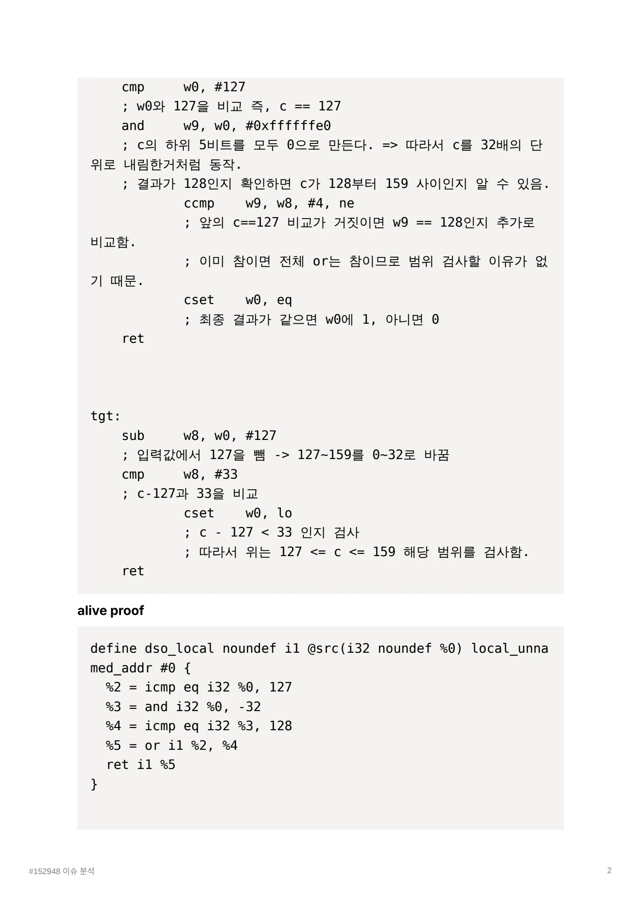
define dso_local noundef i1 @tgt(i32 noundef %0) local_unna / med_addr #0 { / %2 = add i32 %0, -127
define dso_local noundef i1 @tgt(i32 noundef %0) local_unna
med_addr #0 {
%2 = add i32 %0, -127
%3 = icmp ult i32 %2, 33
ret i1 %3
}LLVM IR instruction 비교
ret을 제외한 계산 instruction을 기준으로 세면 다음과 같다.
src
icmp
and
icmp
or총 4개다.
tgt
add
icmp총 2개다.
따라서 InstCombine을 통해 계산 IR instruction이 4개에서 2개로 감소한다.
또한 다음 intermediate value가 제거된다.
masked value
두 번째 equality 결과OR 결합 결과
최종적으로 하나의 canonical unsigned range check 가 만들어진다.#152948 이슈 분석 3
페이지 배치·기호·도식 확인하기

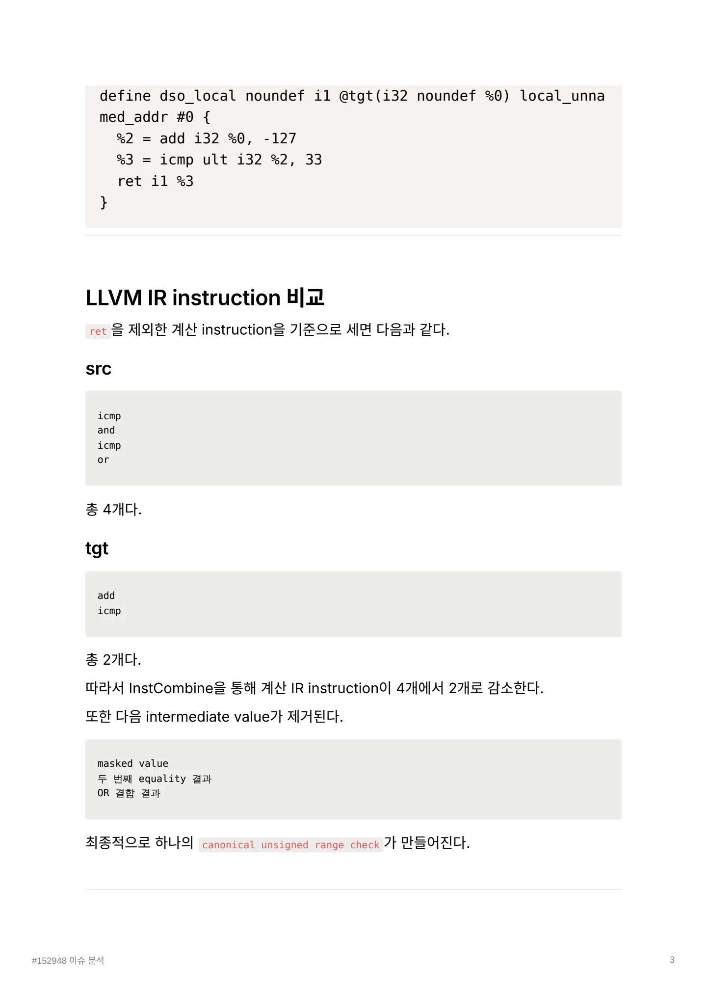
현재 상황 / 1. 같은 일을 더 많은 명령으로 하고 있음. src가 훨씬 더 많은 연산을 사용한다. / src : 상수 준비 + equality 비교 + mask + 조건부 비교
현재 상황
1. 같은 일을 더 많은 명령으로 하고 있음. src가 훨씬 더 많은 연산을 사용한다.
src : 상수 준비 + equality 비교 + mask + 조건부 비교
tgt : 뺄셈 + 비교
→ 놓친 최적화이다.
2. IR도 복잡함. 명령 4개 → 명령 2개
alive 검증.
https://alive2.llvm.org/ce/z/YBLxS
3. 실제 코드에서 발생하는 문제이다. →
Rust 표준 라이브러리의 char::is_control CodeGen에서 발견된 문제임.
실제 프로그램에서 사용하는 표준 라이브 러리 코드가 불필요하게 복잡한 어샘블리 로 생성되는 중.
정리 LLVM은 c==127 과 c가 128~159 범위에 있다는 두 조건이 사실상 c가 127~159 범위에 있다는 하나의 조건이라는 사실을 인식하지 못했고, 그 결과 불필요하게 복잡한 IR과 AArch64 어셈블리를 생성하고 있었다.
→ InstCombine로 해결
추가 rust의 stdlib에 대한 패치로 이어짐.
src / tgt 각각 컴파일 후 어셈블리 비교 AArch64 대상으로 컴파일 하는 것이므로
-mtriple=aarch64-unknown-linux-gnu -mcpu=generic
→ 해당 컴파일 옵션으로 돌림
https://llvm.godbolt.org/z/zczdG9G5K
#152948 이슈 분석 4

그림 안의 텍스트 · 문자 인식
Motivation Codegen for shar::is_control in Rust's stdlib
이미지에서 읽은 문자입니다. 코드 기호는 그림에서 확인하세요.
페이지 배치·기호·도식 확인하기

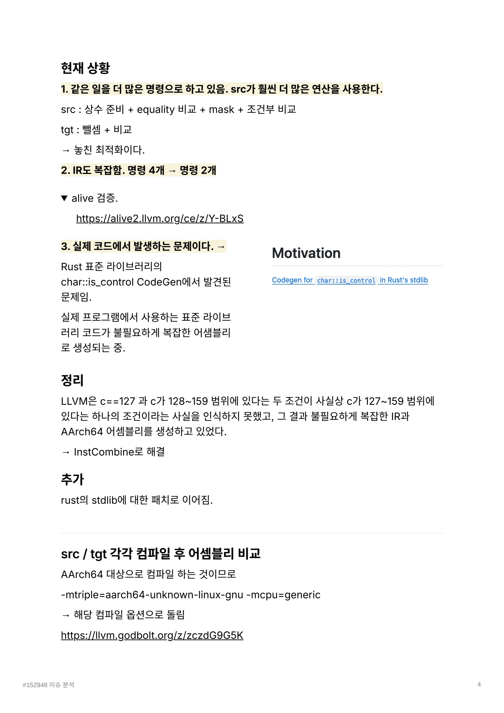
성능관찰 / 1. 실험 환경 / 항목 내용
성능관찰
1. 실험 환경
항목 | 내용 |
|---|---|
운영체제 | macOS 26 |
CPU | Apple M1 (arm64) |
LLVM | Homebrew LLVM 22.1.8 |
컴파일러 | clang O2 |
2. InstCombine 최적화 적용 확인
(1) 최적화 전 LLVM IR
define i1 @test(i32 %x) {
entry:
%cmp1 = icmp eq i32 %x, 127
%masked = and i32 %x, -32
%cmp2 = icmp eq i32 %masked, 128
%result = or i1 %cmp1, %cmp2
ret i1 %result
}2 InstCombine 수행
다음 명령을 사용하여 InstCombine 패스를 적용하였다.
/opt/homebrew/opt/llvm/bin/opt \
-passes=instcombine \
-S range.ll(3) 최적화 결과
define i1 @test(i32 %x) {
entry:
%0 = add i32 %x, -127#152948 이슈 분석 5
페이지 배치·기호·도식 확인하기

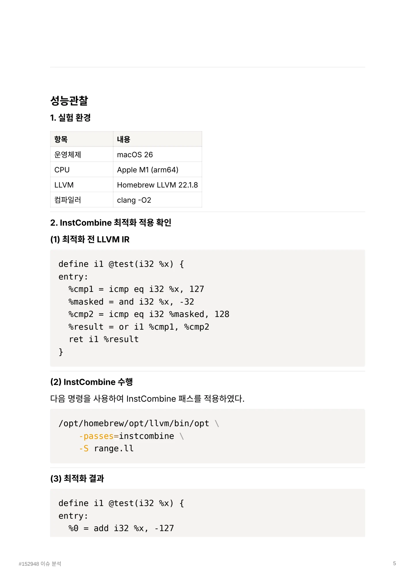
%result = icmp ult i32 %0, 33 / ret i1 %result / }
%result = icmp ult i32 %0, 33
ret i1 %result
}LLVM IR 비교
최적화 전 | 최적화 후 |
|---|---|
| |
| |
| |
|
분석
계산에 사용되는 LLVM IR 명령 수가 4개 → 2개로 감소하였다.
여러 개의 비교 및 논리 연산을 수행하던 조건식이 하나의 Unsigned Range Check 형태로 단순화되었다.
이를 통해 InstCombine이 보다 효율적인 형태의 LLVM IR을 생성함을 확인하였다.
3. 생성된 AArch64 Assembly 비교
(1) 최적화 전 Assembly 생성
다음 명령으로 Assembly를 생성하였다.
/opt/homebrew/opt/llvm/bin/llc range.ll -o range_before.s생성 결과는 다음과 같다.
mov w8, #128
cmp w0, #127
and w9, w0, #0xffffffe0
ccmp w9, w8, #4, ne
cset w0, eq
ret(2) 최적화 후 Assembly 생성
다음 명령으로 최적화된 LLVM IR을 Assembly로 변환하였다.
#152948 이슈 분석 6
페이지 배치·기호·도식 확인하기

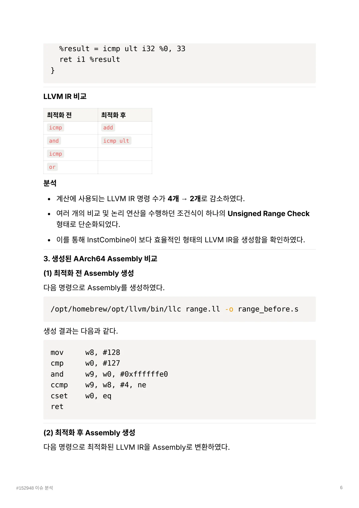
/opt/homebrew/opt/llvm/bin/llc range_opt.ll -o range_after. / s / .
/opt/homebrew/opt/llvm/bin/llc range_opt.ll -o range_after.
s생성 결과는 다음과 같다.
sub w8, w0, #127
cmp w8, #33
cset w0, lo
retAssembly 비교
최적화 전 | 최적화 후 |
|---|---|
| |
| |
| |
| |
| |
| |
분석 기존에는 상수 로드(mov), 비트 마스킹(and), 조건 비교(ccmp)를 수행한 뒤 결과를 반환하 였으나, 최적화 이후에는 단순한 sub와 cmp만으로 동일한 의미를 표현하였다.
이를 통해
mov 제거
and 제거
ccmp 제거가 이루어졌으며, 전체 명령열이 더욱 간결해졌다.
4. 실행 시간 측정
(1) 벤치마크 컴파일
clang -O2 bench.c -o bench#152948 이슈 분석 7
페이지 배치·기호·도식 확인하기

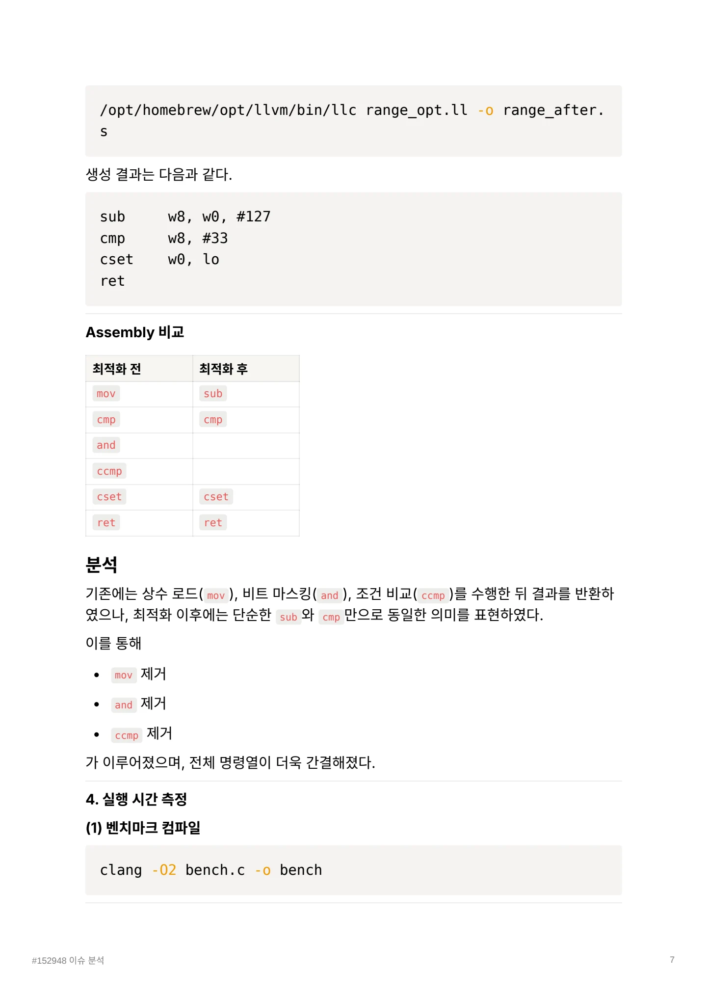
(2) / 벤치마크 실행 / ./bench
(2) 벤치마크 실행
./bench(3) 실행 결과
before: 0.631557 sec
after : 0.617857 sec
sum: 66성능 비교
구현 | 실행 시간 |
|---|---|
최적화 전 | 0.631557 sec |
최적화 후 | 0.617857 sec |
측정 결과
실행 시간 감소: 0.013700초
성능 향상: 약 2.17%
결과 분석 InstCombine 적용 후 기존의 복잡한 조건식은 하나의 Unsigned Range Check 형태로 변환되었다.
그 결과 LLVM IR의 계산 명령 수가 4개에서 2개로 감소하였으며, 생성된 AArch64 Assembly에서도 mov, and, ccmp 명령이 제거되어 더 단순한 명령열이 생성되었다.
또한 동일한 조건식을 5억 회 반복 수행하는 마이크로벤치마크를 수행한 결과, 실행 시간이 0.631557초에서 0.617857초로 약 2.17% 감소하는 것을 확인하였다.
다만 본 실험은 특정 조건식만을 반복 수행하는 마이크로벤치마크 환경에서 수행되었으므 로, 실제 응용 프로그램 전체에서 동일한 수준의 성능 향상이 발생한다고 일반화할 수는 없 다. 그럼에도 LLVM IR과 Assembly 모두에서 명령 수가 감소하였으며, 실제 실행 시간 또 한 개선됨을 확인하여 해당 InstCombine 최적화가 코드 생성 효율 향상에 기여함을 확인하 였다.
패치 위치 추정 & 패치 분석
#152948 이슈 분석 8
페이지 배치·기호·도식 확인하기

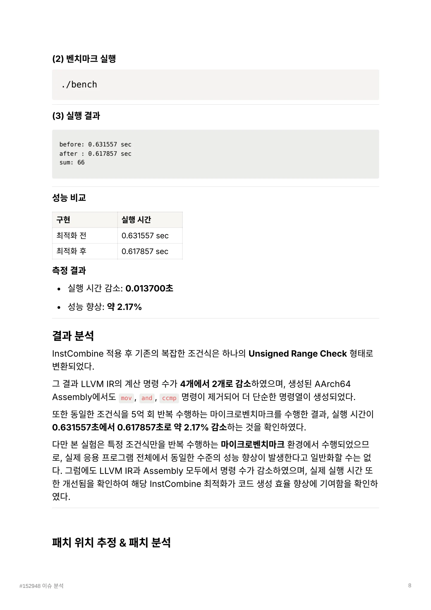
https://github.com/llvm/llvm-project/pull/153842/changes#diff- / c05f5c4db16b4bf11e4abf077a352b529f3d0d7e62eac
https://github.com/llvm/llvm-project/pull/153842/changes#diff- c05f5c4db16b4bf11e4abf077a352b529f3d0d7e62eac940b73cd1293130f51b
이슈에 나와있는대로, InstCombine의 함수 foldAndOrOfICmpsUsingRanges 가 유력
InstCombineAndOrXor.cpp 의 foldAndOrOfICmpsUsingRanges() 함수에 새로운 패턴 인식 로직을추가했다.
foldAndOrOfICmpsUsingRanges 안에 마스크 비교를 범위로 해석하는 로직을 추가
즉, OR의 eq 패턴뿐 아니라, 드모르간 관계인 AND의 ne 패턴까지 지원하도록 추가함.
이번 패치에서는
MatchedAnd1
? ConstantRange(*C1, *C1 - *Mask1)
: ConstantRange::makeExactICmpRegion(...)처럼 마스크 비교를 직접 ConstantRange로 생성하도록 분기 하나를 추가됨.
InstCombineAndOrXor.cpp 의 foldAndOrOfICmpsUsingRanges() 에 (x & -Pow2) == Base 를
ConstantRange 로 변환하는 로직을 추가해서, x == A || ((x & -Pow2) == A+1) 을 하나의range check로 fold할 수 있게 만듬.
테스트 계획 및 분석
llvm/test/Transforms/InstCombine/and-or-icmps.ll#152948 이슈 분석 9

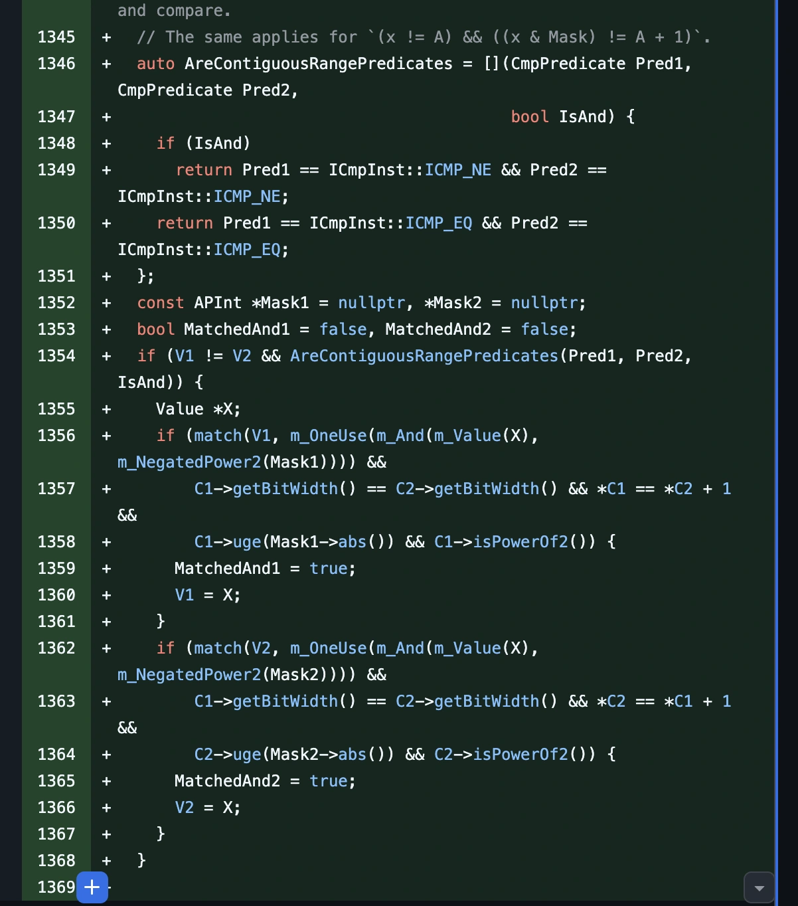
그림 안의 텍스트 · 문자 인식
1345
+ 1/ The same applies for"(X l= A) SG ((X& Mask) != A + 1)-
1346
auto AreContiguousRangePredicates = [)(CmpPredicate Pred1,
br TCUkcacC FECULa
1347
boot IsAnd){
13%6
1f (IsAnd)
1349
return Pred1 w= ICmpinst:: ICMP_NE && Pred2 =
ICmpinst: :ICMP_NE;
135
return Pred1 == ICmpInst::ICMP_EO &6 Pred2 =
ICmpinst: :ICMP_EO;
1351
ColSE APENL aSA_ E nULp t m aske & uL C
1353
bool MatchedAnd1 = false, MatchedAnd2 = false;
1354
If (V1 != V2 &G AreContiguousRangepredicates(Pred1, Pred2,
1355
Value *x;
1356
1f (match(v1, m_Oneuse(m_And(m_Value(X),
nLNegatedPower2(Mask1)))) 66
1357
C1-2getBitwidth() a= C2-2getBitwidth() 6 *c1
13S8
C1-auge(Mask1-rabs()) 86 C1-1sPowero12()) t
MatchedAnd1 - true;
1360
V1 = X;
If(match(V2, m_Oneuse(m_And(n_Value(X),
1362
m_NegatedPower2(Mask2)))) &6
1363
C1-ogetBltwidth() ww C2-3getB1twidth() &6 *C2 es *C1 + 1
1364
C2-3uge(Maskz-rabs()) 85 C2->1sPower0f2()) {
1365
Hatchedanoc = truci
V2=X:
1300
1367이미지에서 읽은 문자입니다. 코드 기호는 그림에서 확인하세요.

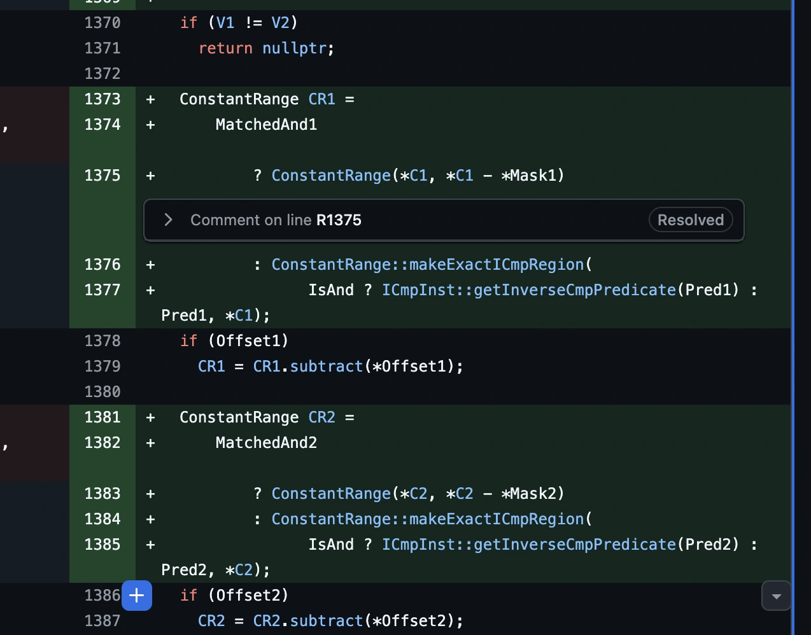
그림 안의 텍스트 · 문자 인식
1f (V1 != V2) retum nullptr; ConstantRange CRL - MatchedAnd1 1375 econstan > Comment on line R1375 • Constantkange: :maketxacescmpnegion 1377 isand 7 iCmpinst::getinversecmpPreaicate(Predi) : If (0f1set1) 1379 CR1 = CR1.subtract(*011set1): 1380 1381 ConstantRange CR2 = 1382 MatchedAnd2 constantranoeker tele cask는 1384 : ConstantRange: :makeExactICmpRegion( 1S05 ASANd t AUipanSti•gecanverscumprrcalcateirr cacy d Pred2, *(2): If (0ftset2) CRL = CKL•subtract(wortser2l
이미지에서 읽은 문자입니다. 코드 기호는 그림에서 확인하세요.
페이지 배치·기호·도식 확인하기

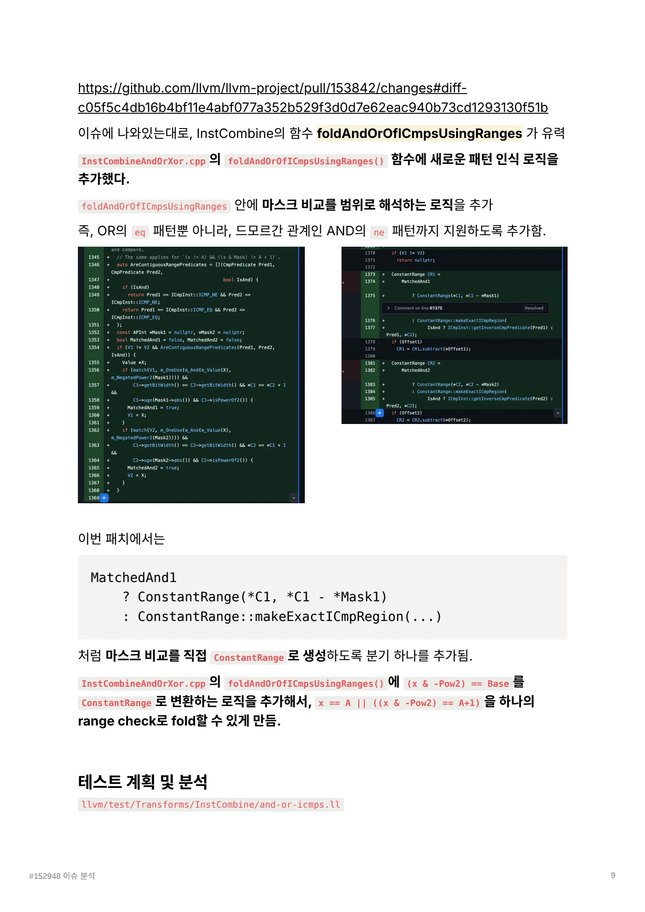
→ InstCombine 이 새 패턴을 올바르게 fold 하는지 , 그리고 fold 하면 안 되는 경우에는 그 / LLVM IR / 대로 두는지 확인하는 회귀 테스트
→ InstCombine이 새 패턴을 올바르게 fold하는지, 그리고 fold하면 안 되는 경우에는 그
대로 두는지 확인하는 LLVM IR 회귀 테스트
(x == A) || ((x & -Pow2) == A + 1) → 이것을 하나의 연속 범위 검사로 바꾸는 것이다.x == 127 || (x & -32) == 128→
%offset = add i32 %x, -127
%cmp = icmp ult i32 %offset, 33이와같이 폴드 한다.
테스트는 두 가지로 나뉘는데
positive test: 반드시 최적화되어야 하는 경우
negative test: 절대로 잘못 최적화하면 안 되는 경우
이다.
Positive Test
최적화가 가능한 패턴을 실제로 하나의 범위 검사로 변환하는지 확인한다.
1. 기본 OR + EQ 패턴
x == 127 || (x & -32) == 128결과:127 <= x <= 159%offset = add i32 %x, -127
%ret = icmp ult i32 %offset, 332. 다른 크기의 마스크
#152948 이슈 분석 10
페이지 배치·기호·도식 확인하기

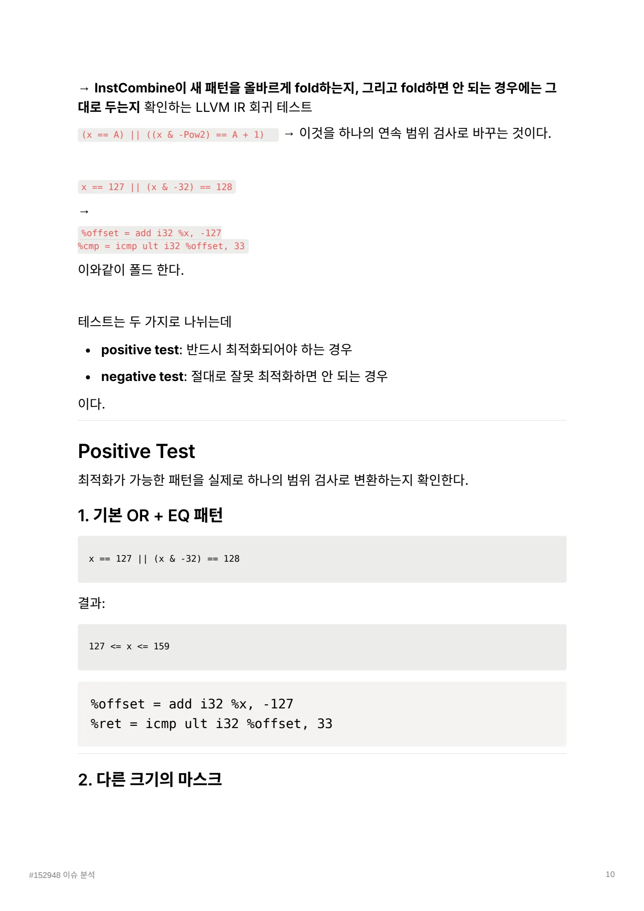
x == 63 || (x & -64) == 64 / : / 결과
x == 63 || (x & -64) == 64결과:63 <= x <= 127특정 상수나 -32에만 맞춘 구현이 아니라, 다른 power-of-two 범위에서도 동작하는지 확 인한다.
3. AND + NE 패턴
x != 127 && (x & -32) != 128이는 기본 OR 조건의 부정 형태이다.
x가 127~159 범위 밖에 있음EQ + OR뿐 아니라 대응되는 NE + AND도 범위 검사로 변환하는지 확인한다.
4. 피연산자 순서 변경
(x & -32) == 128 || x == 127조건의 순서가 반대여도 동일하게 최적화되는지 확인한다.
AND + NE의 순서가 반대인 경우도 함께 테스트한다.
Negative Test
조건을 만족하지 않는 패턴을 잘못 범위 검사로 변환하지 않는지 확인한다.
1. and 결과가 여러 곳에서 사용되는 경우
%and = and i32 %x, -32
call void @use32(i32 %and)#152948 이슈 분석 11
페이지 배치·기호·도식 확인하기

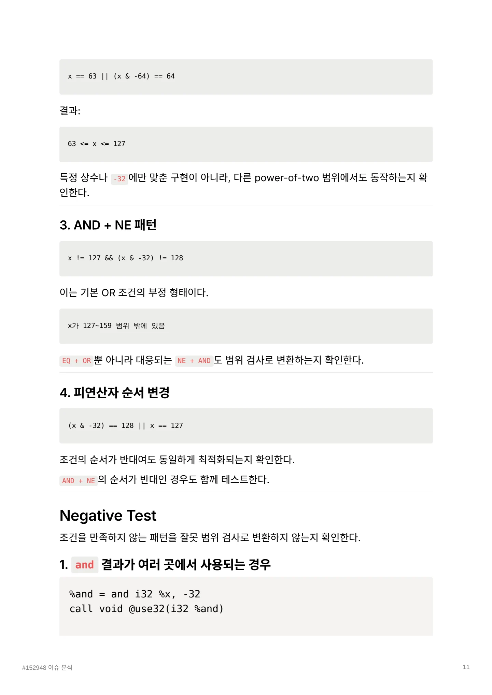
%cmp = icmp eq i32 %and, 128 / . / and 결과가 비교 외의 위치에서도 사용되므로 제거할 수 없다
%cmp = icmp eq i32 %and, 128and 결과가 비교 외의 위치에서도 사용되므로 제거할 수 없다.
따라서 m_OneUse() 조건에 의해 fold하지 않는다.
2. 잘못된 AND + EQ 조합
x == 127 && (x & -32) == 128두 조건은 동시에 참일 수 없으므로 결과는 항상 false이다.
새로운 range fold가 아니라 기존 InstCombine의 상수화가 적용되는지 확인한다.
3. 마스크가 power-of-two 형태가 아닌 경우
(x & -33) == 12833 은 32 , 64 와 같은 negative power-of-two mask가 아니다.
연속된 범위를 나타낸다고 보장할 수 없으므로 fold하지 않는다.
4. 비교 상수가 마스크와 정렬되지 않은 경우
(x & -32) == 16x & -32의 결과는 32의 배수이므로 16이 될 수 없다.
잘못된 범위로 해석하지 않고, 기존 단순화만 수행하는지 확인한다.
5. 범위가 서로 인접하지 않은 경우
x == 126 || (x & -32) == 128두 번째 조건은 128~159를 의미하지만 127이 빠져 있다.
126, 128~159#152948 이슈 분석 12
페이지 배치·기호·도식 확인하기

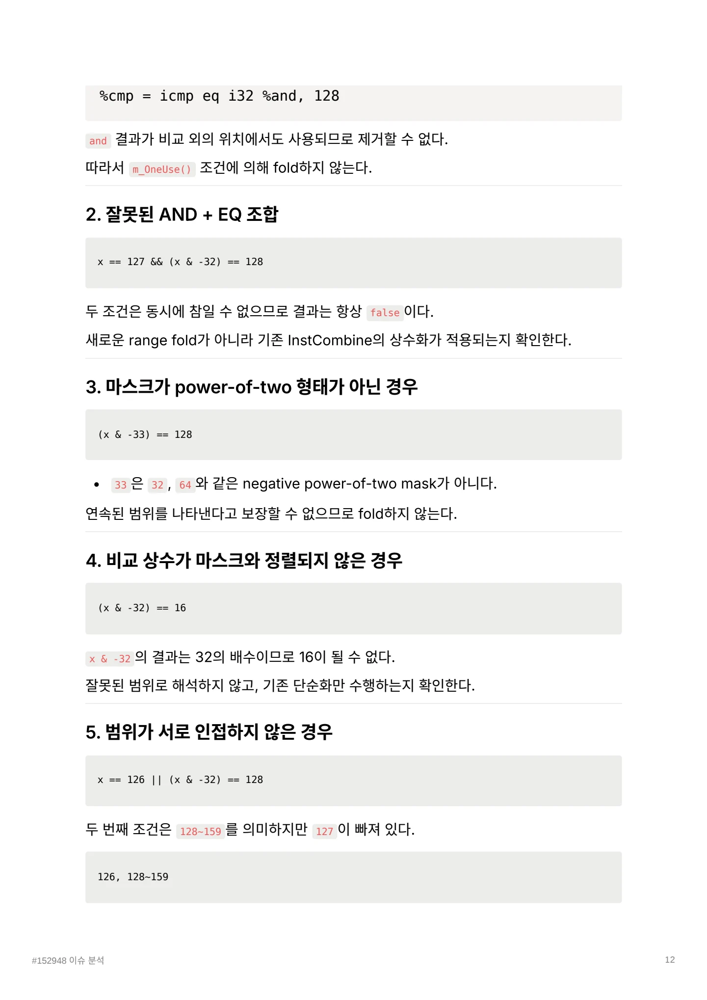
. / 하나의 연속 범위가 아니므로 합치지 않는다 / 6. masked compare
하나의 연속 범위가 아니므로 합치지 않는다.
6. 양쪽 모두 masked compare인 경우
(x & -16) == 64 || (x & -32) == 128이번 패치는 다음 형태만 대상으로 한다.
일반 equality + masked range두 개의 masked range를 합치는 일반적인 최적화는 아니므로 fold하지 않는다.
7. select 로 표현된 경우
select i1 %cmp1, i1 %cmp2, i1 false직접적인 or 또는 and 형태가 아니므로 이번 패턴에 매치하지 않는다.
#152948 이슈 분석 13
페이지 배치·기호·도식 확인하기

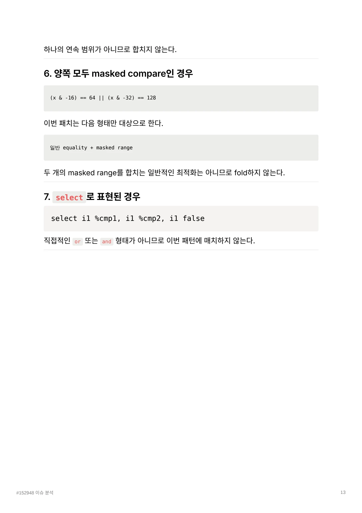
핵심 원리와 편집 주석
문제와 목표
// Before
return c == 127 || (128 <= c && c <= 159);
// After
return 127 <= c && c <= 159;두 식은 같은 정수 집합을 나타낸다. 부호 없는 값에서는 하한을 뺀 뒤 범위의 길이와 비교하는 형태로도 정규화할 수 있다.
IR과 기계어의 차이
자료는 첫 식의 여러 비교·비트 연산과 두 번째 식의 단순한 범위 비교를 대조한다. foldAndOrOfICmpsUsingRanges의 기존 범위 처리를 추적한다.
수학적으로 붙어 있는 구간이라는 사실과, 정해진 비트 폭에서 넘침까지 포함해 올바른 IR 변환이라는 사실을 함께 확인해야 한다.
적용하면 안 되는 경우
- 두 구간 사이에 빈 값이 있으면 하나의 연속 범위로 합치지 않는다.
- 부호 있는 비교와 부호 없는 비교를 구분한다.
- 마스크 결과가 다른 곳에서도 사용되는지 확인한다.
- 경계값을 더하거나 뺄 때 정수 넘침 조건을 확인한다.
원자료에는 하나의 연속 범위가 아닌 사례와 masked compare의 추가 사용처를 포함한 negative 테스트가 있다.
검증과 효과 해석
작성자는 최소 IR, 기계어, llvm-mca와 벤치마크 명령을 남겼다. 테스트는 기대하는 단순화와 기존 표현을 유지해야 하는 조건을 함께 고정한다.
문서 전문과 버전
- PDFPDF 원자료 · 13쪽llvm__1.pdf
각 자료는 별도의 버전입니다. 같은 주제라도 구현 상태·설명 범위·수치가 다를 수 있습니다.
관련 이슈와 PR
구현·병합 상태와 측정값은 해당 제출 자료의 작성 시점 기준입니다.